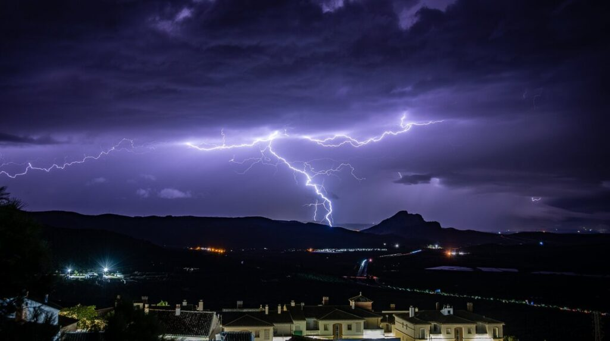
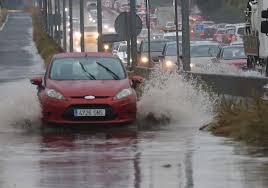

Malaga Christmas lights official switching on
With still almost 2 months left until Christmas, the question on the lips of many on the Costa del Sol is when are the Christmas lights in Malaga going to be switched on.
Read moreMálaga tourism: 'People feel the city is collapsing'
Protesting locals say hordes of tourists make the city feel like a "theme park".
Read moreMalaga airport temporarily shut down
For those flying out of Malaga airport, check your flights before leaving for the airport, as almost all morning flights are delayed.
 Read moreMalaga warns shirtless tourists to cover up amid overtourism row
Posters in the city also ask visitors to not be conspicuous out in public
 Read more
Read more
Axarquía in Malaga province lashed with heavy rain, thunderstorms and hail stones
The wild weather lasted for more than three hours with the fire brigade called out to various incidents in the early hours of this Tuesday morning
 Read more